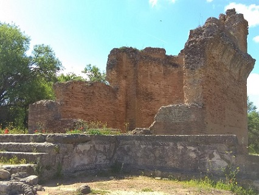
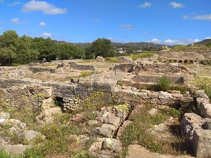
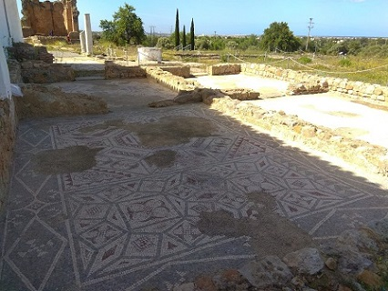

|
Ruínas de Milreu
En Estoi a 9 Km al Norte de Faro se halla la Villa
romana de Milreu. Data del siglo I y fue habitada hasta el siglo XVI.
Se ha descubierto un complejo del siglo II que fue reformado en el siglo
III una domus agrícola de grandes dimensiones, con instalaciones
agrícolas, un templo y termas. En su parte oriental cerca del área
residencial se descubrieron dos mausoleos. El peristilo central tenia 22
columnas. La villa fue decorada con mosaicos de fauna marina.
El templo esta dedicado a las divinidades acuáticas, fue construido en
el siglo IV. En el siglo VI, el templo edificio se transformó en iglesia
cristiana. También descubiertos tres bustos imperiales: Agripina siglo
I, Adriano siglo II y Galieno siglo III.
En el siglo X fue necrópolis islámica y en el
siglo XVI casa particular.
|
 |
 |
 |
|